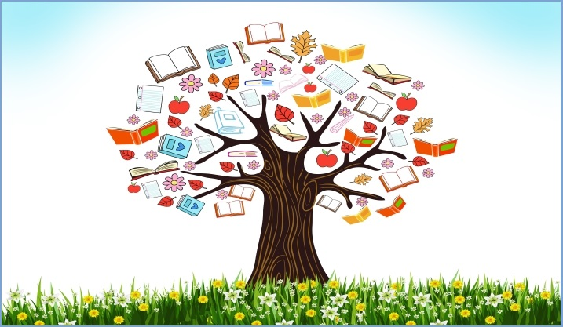

لماذا لغة برمجة عربية ؟
منذ ظهور أولى لغات البرمجة العربية سنة 1978، توالت محاولات تصميم لغات عربية لاكن كلها توقفت مند سنين، حتى ظهرت لغة ألف سنة 2018، مفتوحة المصدر، واضحة الفلسفة و الأهداف، فمؤسسها يقول أن الهدف هو تعليمي و ليس منافسة لغات البرمجة العالمية، و فلسفتها البدء من حيث انتهى الآخرون

ماهي لغة ألف ؟
لغة ألف (حرف أ)، هي لغة برمجة عربية مفتوحة المصدر عالية المستوى من الجيل الثالث، صممت من طرف حسن دراكة في كندا سنة 2018، و هي لغة برمجة تعليمية الأهداف، حيث توفر للطلبة الناطقين بالعربية أرضية سهلة لتعلم أسس البرمجة باللغة العربية